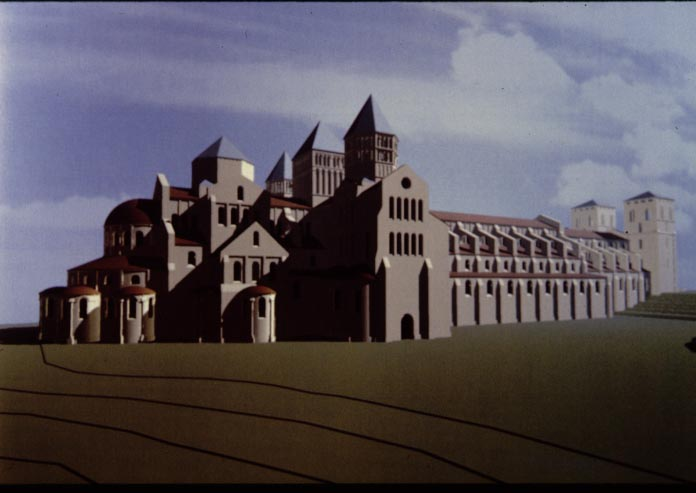
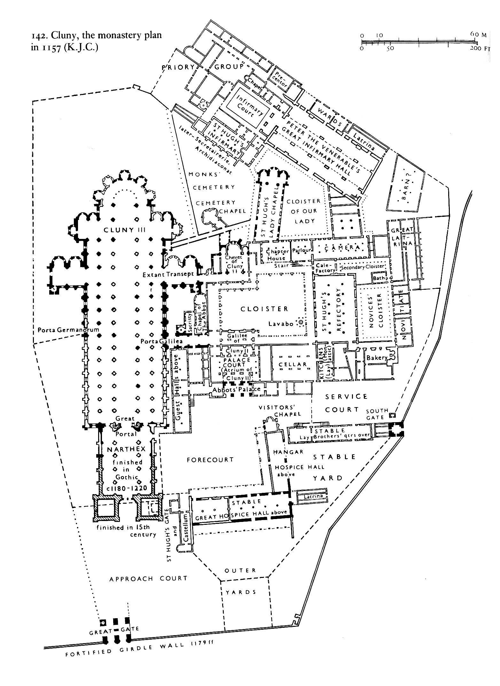
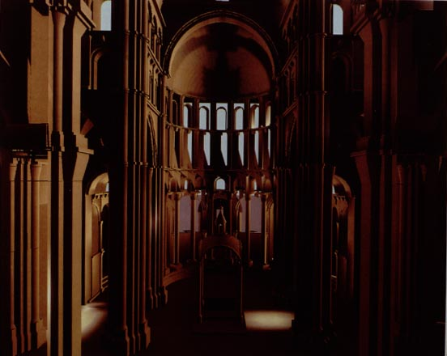
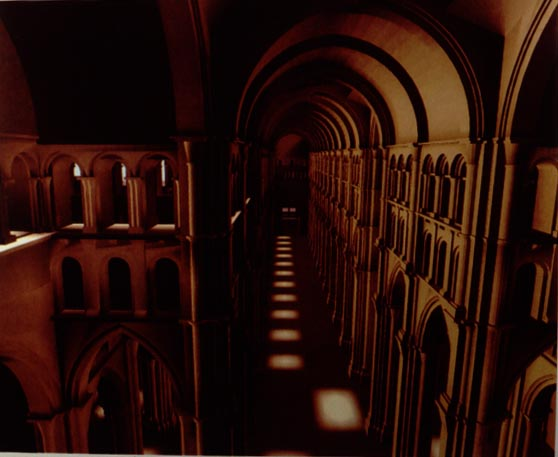
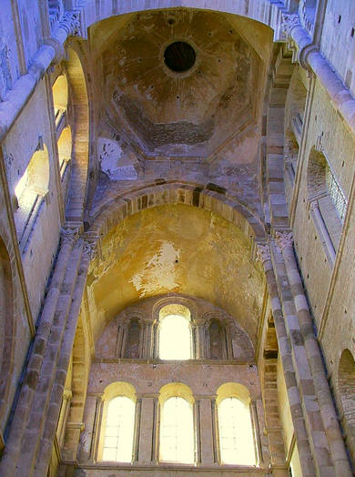
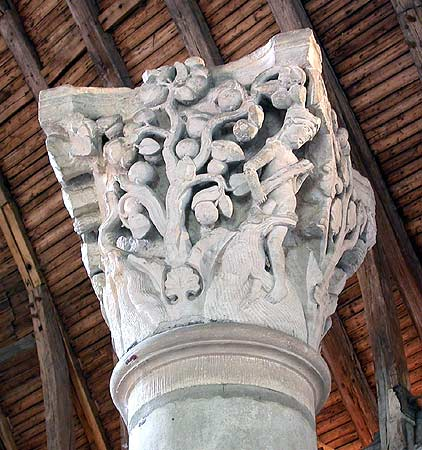
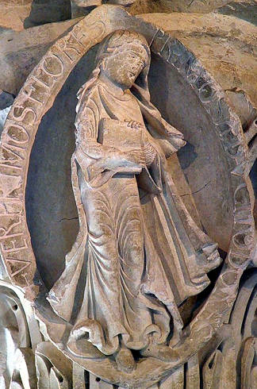
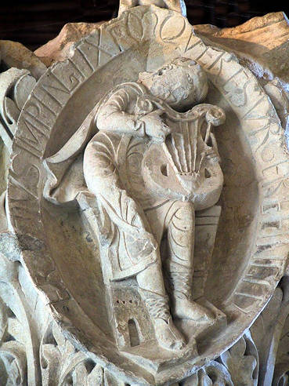
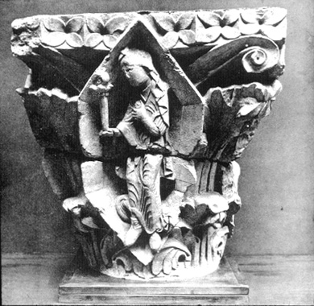

The Church of Cluny III
 (Computer generated* reconstruction of Cluny III) |
The abbey-church of Cluny was on a scale commensurate with the greatness of the congregation, and was regarded as one of the wonders of the Middle Ages. It was 555 feet in length, and was the largest church in Christendom until the erection of the new St. Peter's at Rome in the sixteenth century. It was the focus for the whole order of Clunaic monks, and supposedly could have held them all. |
 |
It consisted of a nave with two aisles on each side, a narthex (entrance-chamber), and several towers. It was finished and consecrated by Pope Innocent II in 1131-32. Subsequently a new, larger narthex was added in 1220. |
Computer generated reconstructions* of the interior of Cluny III:
|
 (Looking east toward the high altar) |
 (Looking west from the altar toward the main door) |
Little survives from the original church, but enough remains to give us some idea of what the whole looked like. The column capitals, doorways, and other suitable places were covered with sculpture, some of which survives in fragments.
 (Interior view of surviving transept) |
Carved stone column capitals: Eve in
Paradise  Spring (the season)  The second Tone (in musical theory)  Hope  |
*Note: computer reconstructions taken from Cluny: architektur als vision, edited by Horst Cramer and Manfred Koob, with text by Ulrich Best (Heidelberg: Braus, 1993).